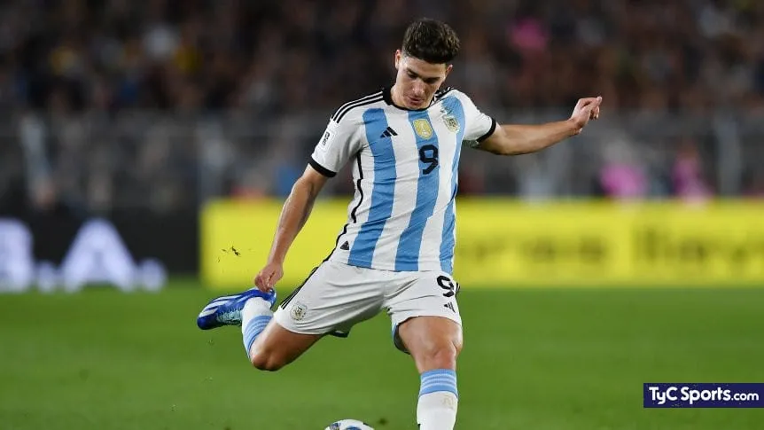

Una goleada espectacular coronó este martes de Eliminatorias Sudamericanas, la misma jornada en la que la Selección Argentina había asegurado sin jugar su boleto al Mundial 2026. Con un Brasil muy alejado de sus mejores versiones y hasta de lo que esbozó picando la previa en los micrófonos, la Scaloneta se floreó como el campeón del mundo que es y lo despachó con un 4-1 inapelable que lo redujo a un sombrío partenaire y supo dejar a los fanáticos en éxtasis.
El arranque del partido estuvo a la altura de lo que se respiraba en un Monumental vibrante. El equipo empezó a mostrar recuperación, gran velocidad y precisión en tres cuartos de cancha y no tardó en dar sus frutos a los tres minutos, cuando una buena jugada colectiva terminó con Thiago Almada habilitando desde la izquierda a Julián Álvarez, que dominó entre Guilherme Arana y Murillo y atropelló ante Bento conectando por lo bajo.
El show continuó a los 12 ante un adversario perdido. Tras una interminable conexión ¡de 33 toques!, Nahuel Molina habilitó desde la derecha a Enzo Fernández para que definiera fuerte y alto por el segundo palo. A partir de ese momento, de las tribunas comenzó a bajar un fervor aún más ensordecedor y se empezó a gestar una noche histórica.
Rodrigo De Paul amenazó con el tercero pero se lo tapó Bento, y a los 26 los de Dorival descontaron inmerecidamente gracias a la presión de Matheus Cunha sobre el Cuti Romero, quien dudó en la salida y sufrió el robo del brasileño que enfrentó a un Dibu Martínez que debió retroceder rápido y no pudo sacar el disparo de su ratonera derecha.
Tras un breve respiro sin sobresaltos, Almada volvió a exigir a Bento y enseguida, a los 36, un exquisito centro desde la derecha de Enzo permitió que Alexis Mac Allister anticipara con un toque no menos lujoso frente al arquero para estirar diferencias. Igual, la tónica del segundo no cambió. Pese a los tres cambios de Brasil, casi cuela un tiro por arriba Julián de entrada, hasta que a los 25 volvió a golpear a fondo y a su antojo el anfitrión, con un centro atrás de Tagliafico que parecía perderse sin que nadie pudiera conectarlo hasta que el ingresado Giuliano Simeone irrumpió por derecha con un sablazo que pegó en el travesaño antes de picar adentro.
Ya con más relevos de parte de Scaloni -metió a Facundo Medina y Nicolás Paz-, solo bajaban "oles" de la tribuna y los chispazos entre los protagonistas terminaban con los argentinos entendiblemente al límite del canchereo. Uno que sucumbió a la tentación fue el Dibu Martínez, que hizo jueguitos y se ganó el reto de Scaloni. En lo que quedó, Raphinha besó el travesaño desde afuera del área, Bento voló para frustrar a Leandro Paredes y De Paul se perdió la última con un disparo alto. Final a la altura de una velada inolvidable, de esas que se imprimen a fuego en las páginas de la historia.